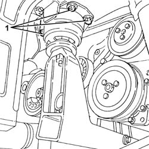
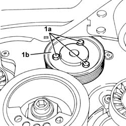

1088C24 water pump pulley - r + r with drive belt removed
- Path
- Procedures > 10 ENGINE > 1088 ENGINE COOLING > 1088C water pump and thermostat > 1088C24 water pump pulley - r + r with drive belt removed
- Kind
- repair procedure (removal / refitting; the operation number is the code)
- Applies to
- engines: 2.5 V6, 3.2 V6; all production periods
- Interactive page
- https://sloeber94.github.io/elrnDB-a156/en/#/3237628
Applies to: engines: 2.5 V6, 3.2 V6; all production periods
 Removing
Removing
 Refitting
RefittingPosition a hydraulic jack under the power unit timing side front support.
1. Undo the bolts fixing the power unit front flexible mounting to the bodyshell.

Applies to: engines: 2.5 V6, 3.2 V6; all production periods
Lower the power unit, as necessary, using the hydraulic jack.
1. Undo the bolts (1a) and remove the water pump pulley (1b).

Applies to: engines: 2.5 V6, 3.2 V6; all production periods
Refitting
RemovingPlace the water pump back in its housing and fix it tightening the bolts to the recommended torque.
 | Fastening | Component | Ø | Value (daNm) |
|---|---|---|---|---|
- | Bolt | COOLANT PUMP PULLEY | M6 | (Water pump side) 0.7 ÷ 0.9 |
Place the power unit back in its housing using the hydraulic jack.
Tighten the bolts fixing the power unit front support flexible mounting to the bodyshell to the recommended torque.
| Fastening | Component | Ø | Value (daNm) |
|---|---|---|---|---|
- | Bolt | FRONT RUBBER MOUNTS | M8 | (Bodyshell side) 3.1 - 3.8 |
Remove the hydraulic jack from under the power unit timing side front support.